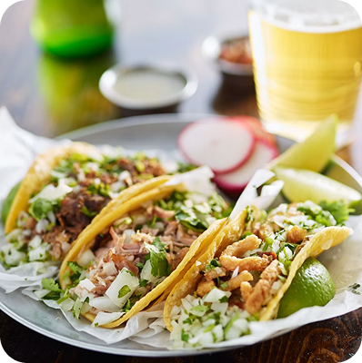

Tacos Locos
John Regan
09/13/2026
Tacos Locos nails that perfect blend of lively energy and laid‑back comfort, making it a spot you actually want to hang around in. The warm lighting and colorful decor give the place a fun, welcoming vibe that fits the name. Their al pastor tacos are the standout—juicy, perfectly seasoned, and balanced with just the right touch of sweetness from the pineapple. The carne asada tacos hit just as hard, packed with smoky flavor and tender cuts that feel way above “local joint” expectations. Altogether, it’s the kind of restaurant that turns a quick taco stop into a full-on favorite.